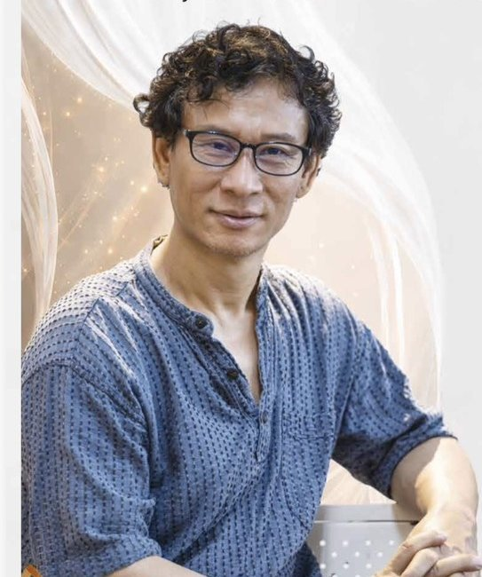

一個演員，就是一座劇場。故事從戰爭開始——一名受傷的士兵被同伴遺留，逃亡途中進入洞穴，遇見一隻母老虎。原本應該彼此恐懼的人與獸，卻在特殊處境中開始共同生活。作品帶著幽默與荒謬，提出一個直接的問題：究竟誰才是真正的野獸？
Jayanta 以一人之力分飾 11 個角色，透過身體、聲音、節奏與角色轉換，讓身體本身成為最核心的劇場語言。這齣作品自 2008 年第一屆臺北藝穗節起演出十八年，2026 年因林浿安社長接任第 15 屆社長，他答應讓這齣原已準備封箱的作品再次回到舞台，並以最貼近作品本質的母語 Manipuri 演出。